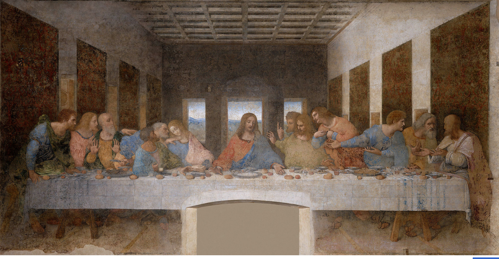

A última ceia

Nome
Ultima Cena (Cenacolo vinciano)
País
1495–1498
Técnica
Da têmpera e óleo sobre duas camadas de gesso aplicadas em estuque
Valor
Indeterminado
Local de exposição
Santa Maria delle Grazie